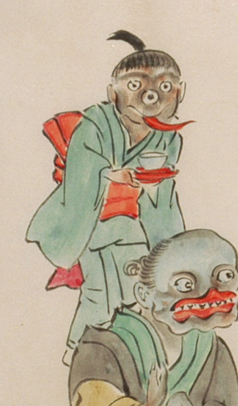

三つ目の化物。女の子のように見える。緑色の着物に赤色の帯を締めている。髪を頭の上で一つに括っている。鼻がなく、その場所に3つめの目がある。赤く長い舌を伸ばしている。両手で盆に載せた茶碗を運んでいる。
出典：親書誌：U426_nichibunken_0053：化物婚礼絵巻；バケモノコンレイエマキ／日付：2006／資源識別子：U426_nichibunken_0053_0019_0005
Copyright (c)2010- International Research Center for Japanese Studies, Kyoto, Japan. All rights reserved.